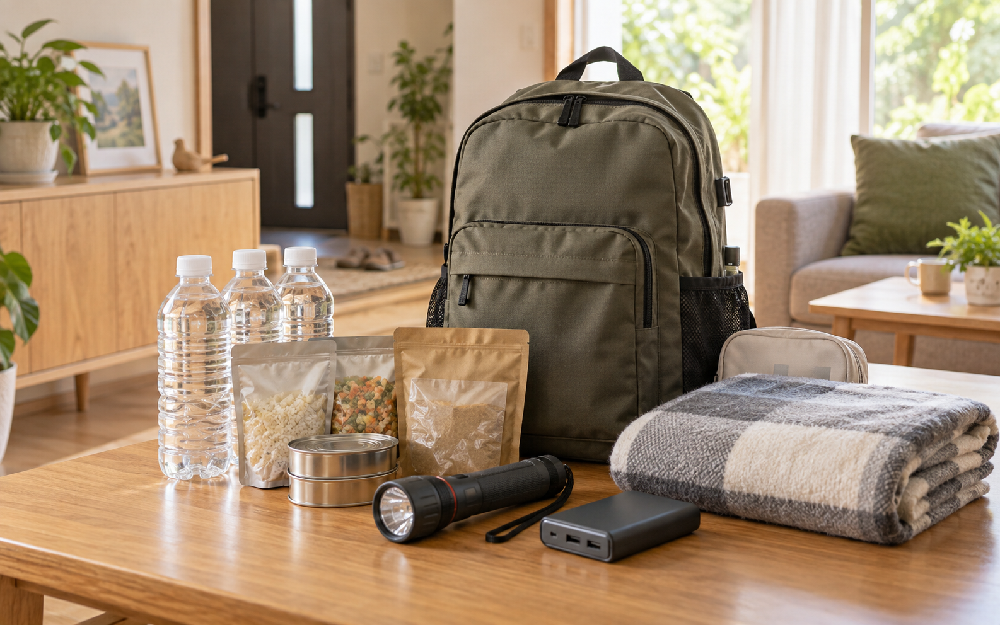
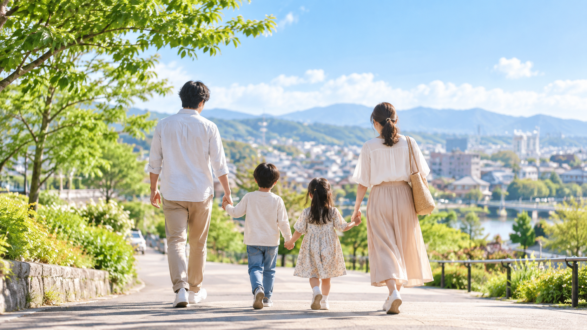
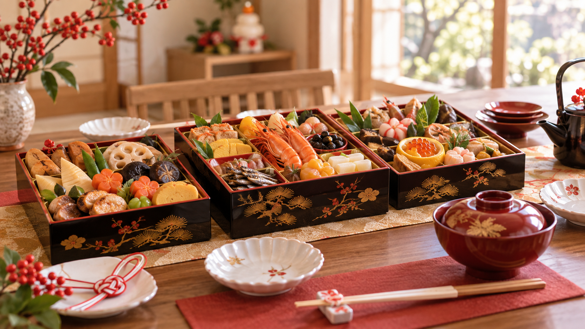
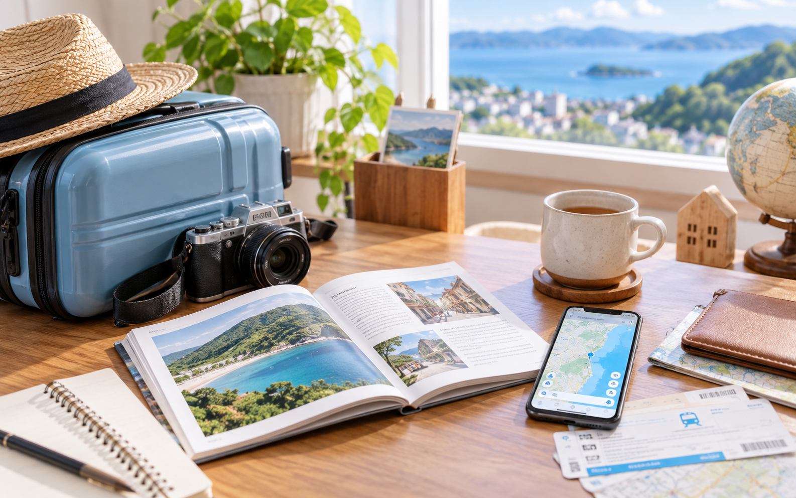
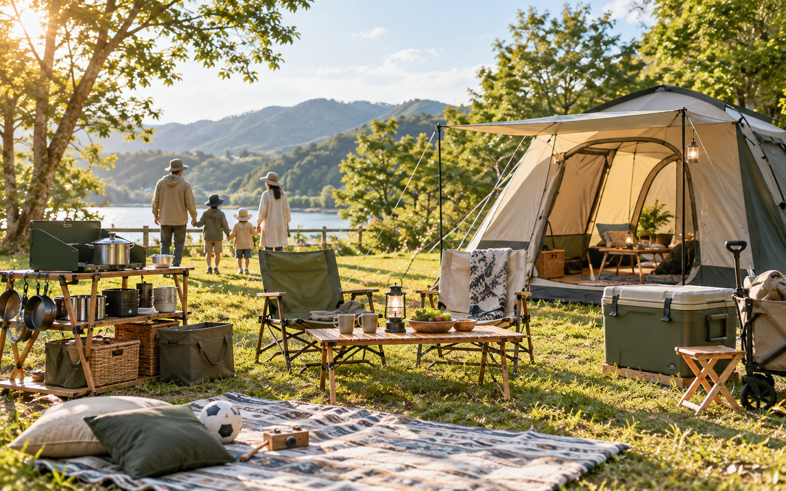
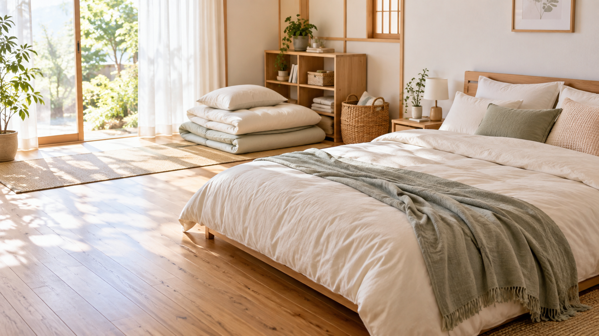
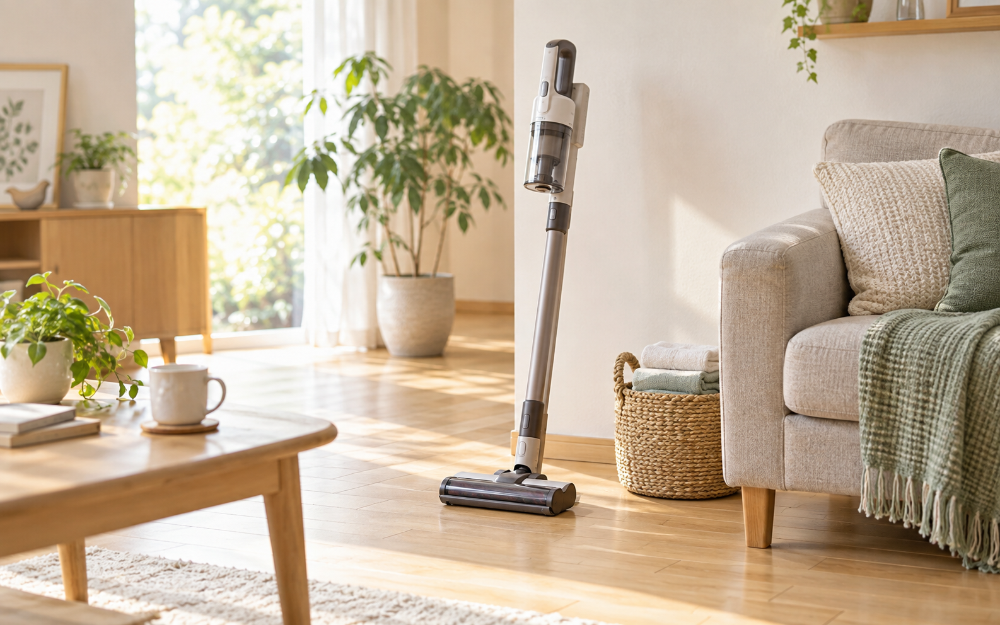
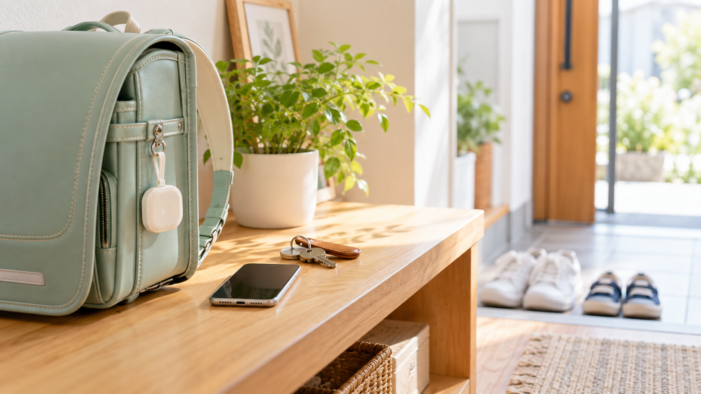
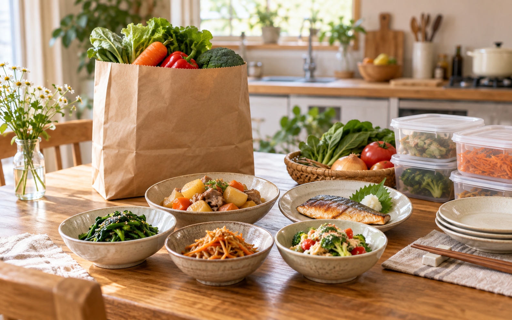

防災は「水・トイレ・明かり」から。
大雨や停電のニュースを見たあとに、家族の人数分で足りないものを確認。まずは持ち出し袋、簡易トイレ、ライト、保存食から見直します。
防災グッズへ →EIJI'S LIFE NOTES
PR｜アフィリエイト広告を含みます
年末の食卓、もしもの備え、平日のごはん、家族旅行。買う前に見ておきたいポイントを、テーマごとにまとめています。

いつもの暮らしから、少しずつ。
PICK UP

大雨や停電のニュースを見たあとに、家族の人数分で足りないものを確認。まずは持ち出し袋、簡易トイレ、ライト、保存食から見直します。
防災グッズへ →
冷蔵庫の空き、帰省予定、子どもが食べやすい内容まで見ておくと、年末に慌てにくくなります。
おせち選びへ →
添い寝、食事、キャンセル料、駅からの距離を先に見ると選びやすくなります。
旅行ページへ →
テント、チェア、ランタン、保冷、電源をそろえると、週末の遊びにも防災にも役立ちます。
キャンプ用品へ →キッチン家電、季節家電、ギフト、旅グッズ。家族で使う場面を先に決めると見やすくなります。
暮らし雑貨へ →手土産、内祝い、お歳暮、ちょっとしたお礼を、日持ち・包装・家族人数で考えます。
ギフトページへ →加湿器、空気清浄機、除湿機、ヒーターを、困っている場面から選びます。
空間家電ページへ →写真入り年賀状、喪中はがき、宛名印刷を、年末に慌てない順番で整理します。
年賀状ページへ →スマホに入れたままの写真を、家族で見返せるプリントやアルバム候補として考えます。
写真ページへ →
マットレス、布団、こたつ・家具、来客用レンタルを、置き場所と使う期間から考えます。
寝具ページへ →
床掃除、食べこぼし、布団ケア。家族の暮らしに合わせて、道具とサービスを見直します。
家事ラク用品へ →
登下校、家の中、離れて暮らす家族。承認済みの広告から順番に追加していきます。
見守り用品へ →RECENT POSTS
水・トイレ・明かり・保存食から、家族の備えを見直すページです。
防災グッズを見る →家族で遊べて、停電時にも役立つライト・電源・保冷用品をまとめています。
キャンプ用品を見る →毎日の寝具、冬のこたつ・家具、必要な時だけ使う布団を分けて考えるページです。
寝具ページを見る →FIND YOUR THEME
 季節の支度
季節の支度
年末の準備を軽くしたい。人数・受け取り日・冷蔵庫の空きから、おせちを見比べる。
年末の食卓を選ぶ →家の備えに足りないものを知りたい。持ち出し用品・トイレ・食事・電源から考える。
もしもの備えを見る →
毎日のごはん平日のごはんを少しラクにしたい。作り置き・ミールキット・冷凍食を手間別に選ぶ。
ごはんの負担を減らす →国内・海外の予約サイトを、行き先や旅のスタイルから比べる。
旅行の宿選びを見る →テント・チェア・ランタン・クーラーボックス・電源を、家族で使いやすい順に選ぶ。
キャンプ用品を見る →毎日のマットレス・枕、季節の布団、冬のこたつ・家具、来客用レンタルを使う期間から選ぶ。
寝具選びを見る →食品ギフトを、相手の家族構成・渡す日・包装対応から考える。
ギフト選びを見る →写真、枚数、宛名、納期を、年末に慌てない順番で確認する。
年賀状ページを見る →スマホ写真を、プリント・フォトブック・記念撮影の候補として整理する。
写真ページを見る →加湿器、空気清浄機、除湿機、ヒーターを、部屋と悩みから選ぶ。
空間家電を見る →GPS、見守りカメラ、センサー型を、心配な場面から分けて考える。
見守り用品を見る →BRUNO onlineを、家族の食卓・冬じたく・ギフト・旅グッズの候補として見る。
暮らし雑貨を見る →コードレス掃除機、ロボット掃除機、布団ケア、家事代行を減らしたい家事から選ぶ。
家事ラク用品を見る →家族の後ろ姿・おせちの食卓画像・防災・宅配食・旅行・キャンプ・寝具・家事ラク・暮らし雑貨・見守り用品の画像や図はイメージです。空間家電とギフトのバナーはA8.net配布の広告素材です。
SHOPPING GUIDE
量やサイズは、人数ぴったりより少し余裕があるかを見ると安心です。
冷蔵・冷凍・常温、配送日、置き場所を先に確認します。
食品や旅行は条件が変わりやすいので、リンク先の公式情報を確認してください。
ABOUT THIS SITE
栄次が、家族との暮らしをテーマにまとめる紹介サイトです。価格だけでなく、人数や置き場所、準備の手間も選ぶ手がかりにしています。
実際に使ったレビューと、公式情報をもとにした紹介を区別して掲載します。購入・配送・返品のお手続きは、リンク先の販売元でご確認ください。
NEW THEME